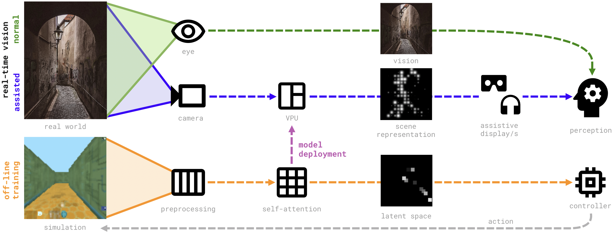
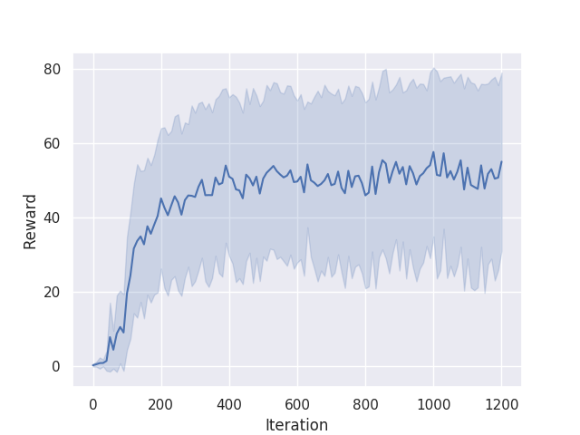
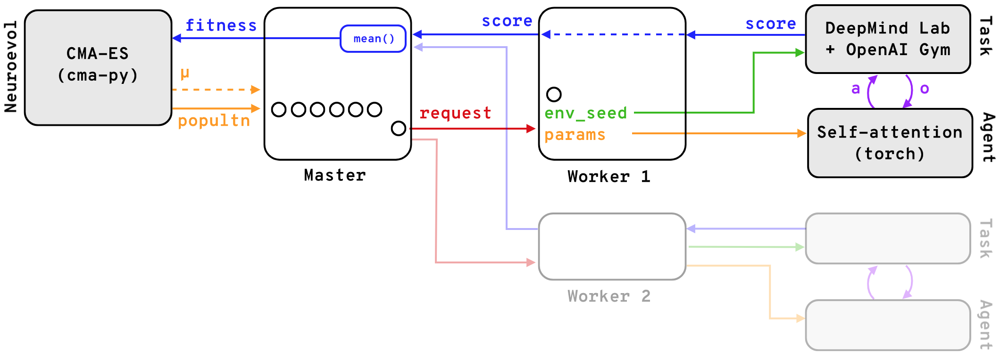
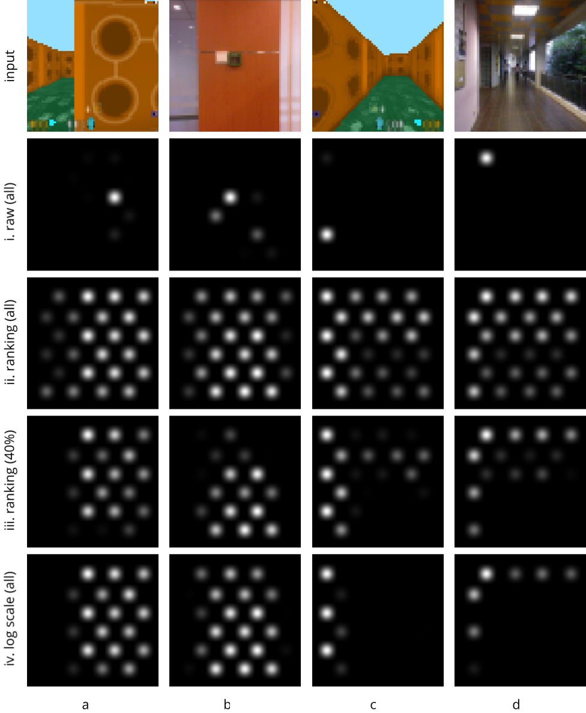

Learning vision processing for assistive displays through self-attention agents
Cyb-IEEEIEEE Transactions on Cybernetics (under review)
Problem statement

Assistive vision consists of a camera that captures the real world, with
images processed by a video processing unit (VPU), converting them into scene
representations that can be rendered in assistive displays of different kinds.
We train a self-attention network in a RL context to select important parts of
images for 3D navigation. Once trained, the SA network can be deployed
to the visual prostheses’ VPU to perform the vision processing.
With the goal of simplifying visual representations of scenes
for navigation by selecting relevant features, we build upon
the work of Tang et al. ,
adapting the DRL agent they introduced to enable training in a 3D navigation simulation environment. We
propose several methods to enhance the selected features,
and adapt the vision processing pipeline to present the obtained representations through different display modalities,
highlighting the method’s versatility. The resultant visualisations’ task-relevant features are enhanced, and those
irrelevant removed, effectively increasing the signal-to-noise ratio.
Training in simulation
The agents are trained in Deepmind Lab
"NavMaze" simulation environments with RGB-D observations (or variations thereof),
and an action space size of 3.
The self-attention models are trained in a reinforcement learning context by means of neuroevolution.
During training, the LSTM controller part of the network makes all decisions based solely on the
location of the top K most important image patches. This figure shows agent d2 navigating environment
NavMazeStatic01.

The agents can learn to navigate the environment effectively with less than
100 million training observations (~200 iterations × 64 population/iter. ×
8 episodes/pop. × 900 observations/episode ≈ 92E6 observations), taking ~3h of wall time in our infrastructure.
This figure shows agent d2 learning in environment NavMazeStatic01.

To make the training process more scalable and marginally faster, we completely decoupled the CMA-ES
population from the training task queue. Task requests, including population member
identifier and agent parameters for the given population member are placed in a
queue and undertaken by compute workers on a FIFO basis. This makes the training
more flexible and suitable for distributed computing.
Vision processing in real-world scenes
 The representations learnt in simulation translate to the real-world.
Hyperparameters can be adjusted in real time in the final application. For example,
in this figure, K=10 patches are selected in training, whereas K=80
patches are selected in the real-world image.
The representations learnt in simulation translate to the real-world.
Hyperparameters can be adjusted in real time in the final application. For example,
in this figure, K=10 patches are selected in training, whereas K=80
patches are selected in the real-world image.
Below we show different feature retrieval methods applied to real-world RGB-D video.
Importance ranking
Patch brightness is based on its importance ranking. Agent C4*, showing K=50 patches.
Masked luminance
Luminance (greyscale) masked with selected patches. Agent C4*, showing K=50 patches.
Masked depth
Depth channel (disparity values) masked with selected patches. Agent C4*, showing K=50 patches.
Weighted depth
Depth at the patch location is scaled by the patch importance value. Agent C4*, showing all patches.
Display modalities
Simulated Phosphene Visualisation

SPV of different output modes (refer to Figure 5 in the paper).
Acknowledgements
The template for this supporting materials site is from Tang et al.
The experiments in this work were performed on Swinburne University's OzStar high-performance computing system.
Citation
For attribution in academic contexts, please cite this work as:
Jaime Ruiz-Serra and Jack White and Stephen Petrie and Tatiana Kameneva and Chris McCarthy,
Learning vision processing for assistive displays through self-attention agents, 2022.
BibTeX citation
@article{Ruiz-Serra2021,
author = {Ruiz-Serra, Jaime and
White, Jack and
Petrie, Stephen and
Kameneva, Tatiana and
McCarthy, Chris},
title = {Learning vision processing for assistive displays through self-attention agents},
eprint = {},
url = {},
note = "\url{http://ruizserra.github.io/self-attention-assistive-displays}",
year = {2022}
}
Open Source Code
Code to reproduce the results in this work TBD.
Reuse
Diagrams and text are licensed under Creative Commons Attribution CC-BY 4.0 with the source available on GitHub, unless noted otherwise. The figures that have been reused from other sources don’t fall under this license and can be recognized by the citations in their caption.